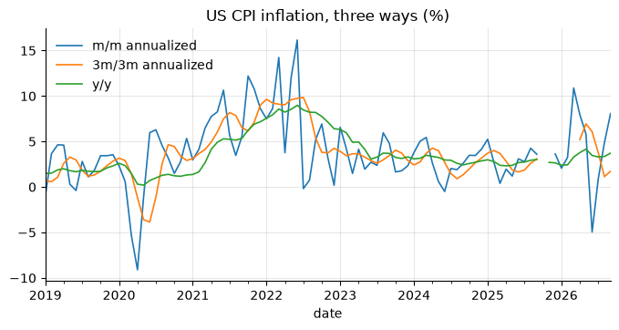

7. Rolling windows, smoothing, lags and leads#
import numpy as np
import pandas as pd
import matplotlib.pyplot as plt
from econts import load
payems = load("PAYEMS").asfreq("MS")
cpi = load("CPIAUCSL").asfreq("MS")
brent = load("DCOILBRENTEU").dropna()
7.1. Moving averages#
jobs = payems.diff() # monthly change, thousands
ma = pd.DataFrame(
{
"monthly change": jobs,
"3m trailing": jobs.rolling(3).mean(),
"12m trailing": jobs.rolling(12).mean(),
"13m centered": jobs.rolling(13, center=True).mean(),
}
)
print(ma.loc["2025-06":].round(0))
monthly change 3m trailing 12m trailing 13m centered
date
2025-06-01 -20.0 34.0 65.0 27.0
2025-07-01 64.0 19.0 66.0 21.0
2025-08-01 -70.0 -9.0 60.0 13.0
2025-09-01 76.0 23.0 53.0 26.0
2025-10-01 -140.0 -45.0 39.0 32.0
2025-11-01 41.0 -8.0 31.0 29.0
2025-12-01 -17.0 -39.0 10.0 30.0
2026-01-01 160.0 61.0 27.0 31.0
2026-02-01 -156.0 -4.0 10.0 36.0
2026-03-01 214.0 73.0 23.0 44.0
2026-04-01 148.0 69.0 26.0 NaN
2026-05-01 63.0 142.0 30.0 NaN
2026-06-01 31.0 81.0 34.0 NaN
2026-07-01 -10.0 28.0 28.0 NaN
2026-08-01 133.0 51.0 45.0 NaN
2026-09-01 29.0 51.0 41.0 NaN
The centered average has no value for the last six months: it needs data that do not exist yet. That is the end-point problem of chapter 6 again.
7.2. Exponential smoothing#
An exponentially weighted moving average puts weight \(\alpha (1-\alpha)^k\)
on the observation \(k\) periods ago. Parameterize it by halflife (periods
for the weight to halve), span or alpha.
ewma = jobs.ewm(halflife=3).mean()
print(ewma.tail(3).round(0))
date
2026-07-01 43.0
2026-08-01 62.0
2026-09-01 55.0
Freq: MS, Name: PAYEMS, dtype: float64
7.3. 3m/3m annualized growth#
The growth of the last three months’ average over the previous three months, annualized. A standard way to read noisy monthly inflation:
avg3 = cpi.rolling(3).mean()
infl = pd.DataFrame(
{
"m/m annualized": 100 * ((cpi / cpi.shift(1)) ** 12 - 1),
"3m/3m annualized": 100 * ((avg3 / avg3.shift(3)) ** 4 - 1),
"y/y": 100 * cpi.pct_change(12, fill_method=None),
}
)
ax = infl.loc["2019":].plot(lw=1.2)
ax.set_title("US CPI inflation, three ways (%)")
Text(0.5, 1.0, 'US CPI inflation, three ways (%)')

3m/3m reacts faster than y/y and is much less noisy than m/m. The gaps in
late 2025 and 2026 are the missing October 2025 CPI (chapter 2): every
measure whose window touches that month is NaN.
7.4. Rolling volatility and correlation#
ret = 100 * np.log(brent).diff().dropna() # daily log returns, %
vol = ret.rolling(21).std() * np.sqrt(252) # annualized, 1-month window
print(vol.tail(3).round(1))
ret_m = 100 * np.log(load("DCOILBRENTEU").resample("MS").mean()).diff()
ip_m = 100 * np.log(load("INDPRO")).diff()
roll_corr = ret_m.rolling(60).corr(ip_m) # 5-year rolling correlation
print(roll_corr.dropna().describe().round(2))
date
2026-10-30 79.7
2026-11-02 64.5
2026-11-03 60.0
Name: DCOILBRENTEU, dtype: float64
count 413.00
mean 0.18
std 0.24
min -0.37
25% -0.01
50% 0.16
75% 0.24
max 0.69
dtype: float64
Use rolling("30D") with a time-based window on irregular daily data: it
always covers 30 calendar days, however many observations fall inside.
vol_30d = ret.rolling("30D", min_periods=15).std() * np.sqrt(252)
7.5. Rolling regressions#
statsmodels estimates a regression on every window efficiently. Example:
a rolling Okun’s-law coefficient (change in unemployment on GDP growth).
import statsmodels.api as sm
from statsmodels.regression.rolling import RollingOLS
gdp = load("GDPC1").to_period("Q")
u = load("UNRATE").to_period("M").resample("Q").mean()
d = pd.DataFrame({"du": u.diff(), "g": 100 * np.log(gdp).diff()}).dropna()
d = d.loc[:"2019"] # keep 2020 out of the windows
okun = RollingOLS(d["du"], sm.add_constant(d["g"]), window=40).fit()
print(okun.params["g"].dropna().iloc[::20].round(2)) # every 5 years
date
1958Q1 -0.32
1963Q1 -0.36
1968Q1 -0.27
1973Q1 -0.17
1978Q1 -0.27
1983Q1 -0.28
1988Q1 -0.28
1993Q1 -0.33
1998Q1 -0.23
2003Q1 -0.22
2008Q1 -0.19
2013Q1 -0.35
2018Q1 -0.39
Freq: Q-DEC, Name: g, dtype: float64
7.6. Expanding windows#
expanding() uses all data up to each date: the real-time version of a
full-sample statistic (e.g. a z-score that only uses the past).
growth = 100 * np.log(gdp).diff()
z_realtime = (growth - growth.expanding(40).mean()) / growth.expanding(40).std()
7.7. Lags, leads and differences#
df = pd.DataFrame({"y": gdp})
df["y_lag1"] = df["y"].shift(1) # y(t-1)
df["y_lead1"] = df["y"].shift(-1) # y(t+1)
df["d4"] = df["y"].diff(4) # y(t) - y(t-4)
df["d_d4"] = df["y"].diff(4).diff() # change in the 4-quarter difference
print(df.tail(3).round(0))
y y_lag1 y_lead1 d4 d_d4
date
2026Q1 24274.0 24125.0 24408.0 624.0 140.0
2026Q2 24408.0 24274.0 24611.0 523.0 -101.0
2026Q3 24611.0 24408.0 NaN 498.0 -25.0
Many lags at once, for a distributed-lag or VAR design matrix (EMT lagX):
def lags(s: pd.Series, n: int) -> pd.DataFrame:
return pd.concat({f"{s.name}_L{k}": s.shift(k) for k in range(1, n + 1)}, axis=1)
X = lags(growth.rename("g"), 4)
print(X.dropna().head(2).round(2))
g_L1 g_L2 g_L3 g_L4
date
1948Q2 1.49 1.55 -0.21 -0.27
1948Q3 1.64 1.49 1.55 -0.21
In your projects
The same recipe is in the econts toolkit:
# pandas: pd.concat({f'x_L{k}': x.shift(k) for k in range(1, n + 1)}, axis=1)
7.8. Pitfalls#
shiftmoves by rows, not by time. On an irregular index, call.asfreq()first, or shift by time withs.shift(freq="MS").A rolling statistic on data with
NaNsilently uses fewer observations whenmin_periodsis lower than the window.Centered moving averages and two-sided filters leak future information into regressions: forecasts look great in-sample and fail out of sample.
7.9. Summary#
Trailing windows (the default) use only the past: safe for real-time indicators and forecasting. Centered windows (
center=True) use the future: fine for description, never as a regressor.Set
min_periodsdeliberately; the default returnsNaNuntil the window is full.Report noisy monthly data as 3-month averages or 3m/3m annualized growth.
7.10. Exercises#
Compute monthly changes in payroll employment (
PAYEMS) and their 3-month trailing average for 2023 to the end of the sample. How many months show a fall in each, and which would you report in a briefing note?Compute m/m annualized, 3m/3m annualized and y/y CPI inflation (
CPIAUCSL) for 2021–2023. In which month does each peak, and how many months earlier does 3m/3m signal the turn than y/y?Compute the annualized 21-day rolling volatility of daily Brent log returns (
DCOILBRENTEU). Find its peak in 2008, 2020 and 2022, and compare the 2020 peak with the one from a"30D"time-based window.Estimate a rolling 40-quarter Okun regression (change in unemployment on GDP growth) for Portugal (
LRHUTTTTPTQ156S,CLVMNACSCAB1GQPT, 1995–2019) and compare its path with the US one in the chapter. Is the Portuguese coefficient more or less stable, and why might labour-market institutions matter?